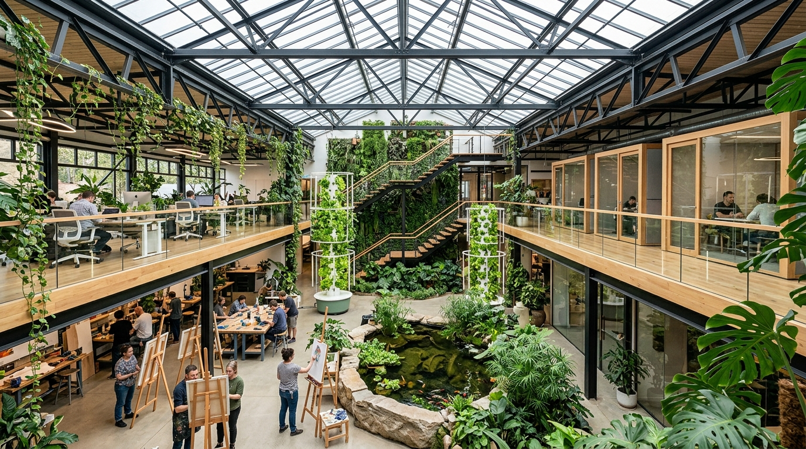
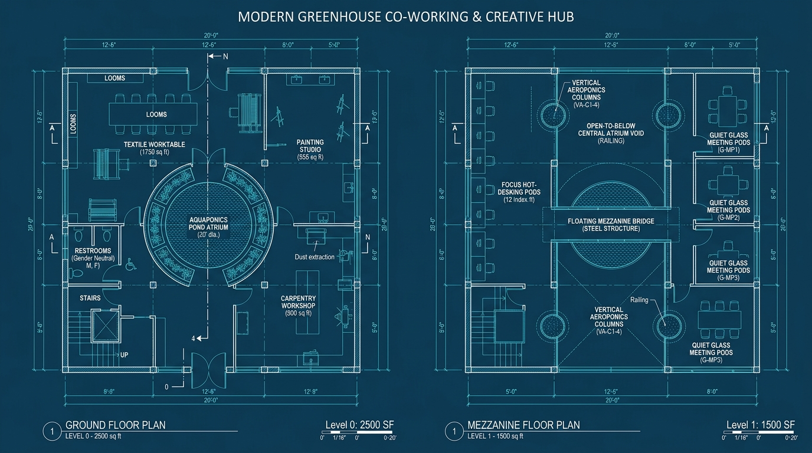
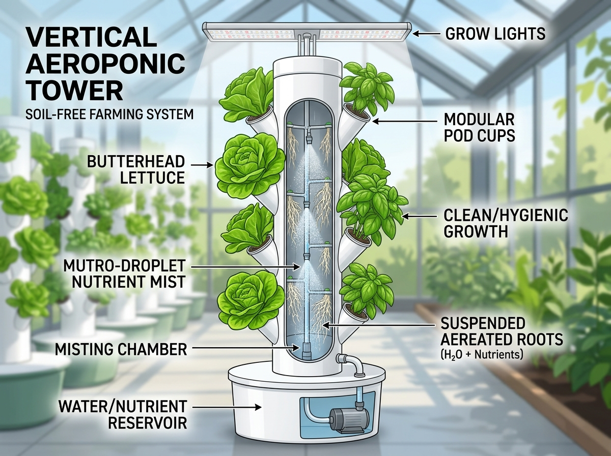
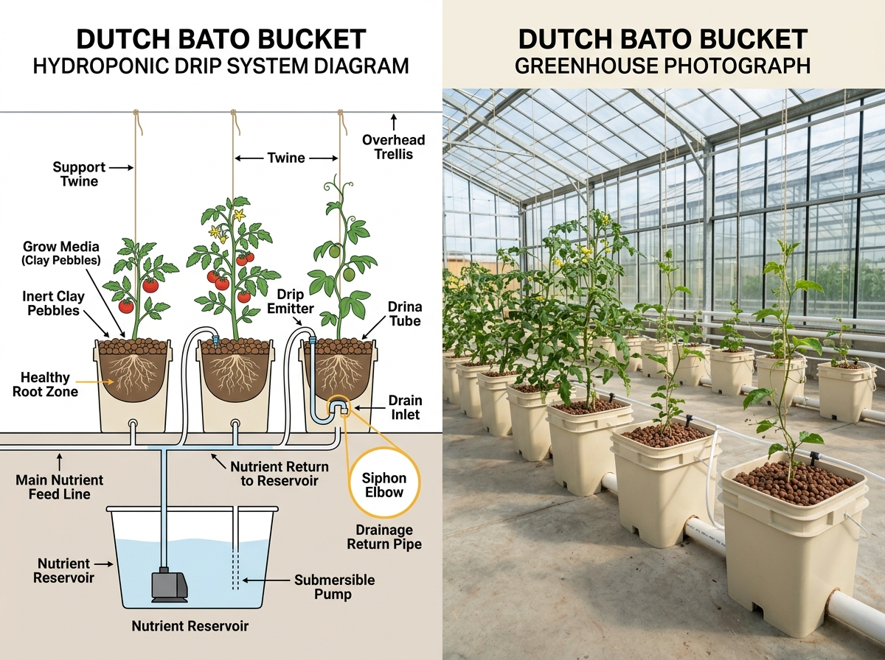
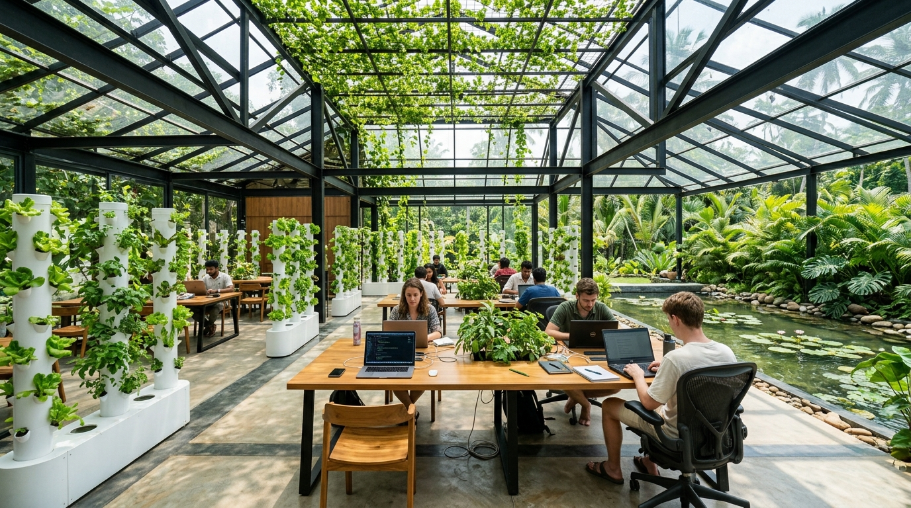

By introducing a floating timber mezzanine and high-ridge rooftop agri-catwalk within the 2,500 sq ft ground footprint, the usable working and cultivation area expands to 4,500 sq ft (+80% gain) — creating perfect acoustic separation between active ground workshops and quiet upper-deck co-working.

How each floor level is optimized for specific acoustic, creative, work, and agricultural functions.
Switch between multi-story layouts, cross-section elevations, single-level plans, and the original site survey.

Explained in simple, beginner-friendly terms with visual diagrams and real-world mechanisms.



Adjust outdoor environmental sliders to see how the 8.5m ridge ventilation monitor, aluminet screens, and misting systems coordinate.
Recommended video guides demonstrating how soilless cultivation and biophilic architecture operate in practice.
See how the internal water pump and misting manifold deliver oxygen and water to hanging roots.
▶ Watch "Tower Gardens 101" by Humble GrowthWatch the siphon elbow mechanics and drip line assembly for climbing vining plants.
▶ Watch "Dutch Bucket System Step-by-Step"Learn how fish waste is naturally converted into clean organic nitrates without chemicals.
▶ Watch "Rob Bob's Aquaponics Guide"